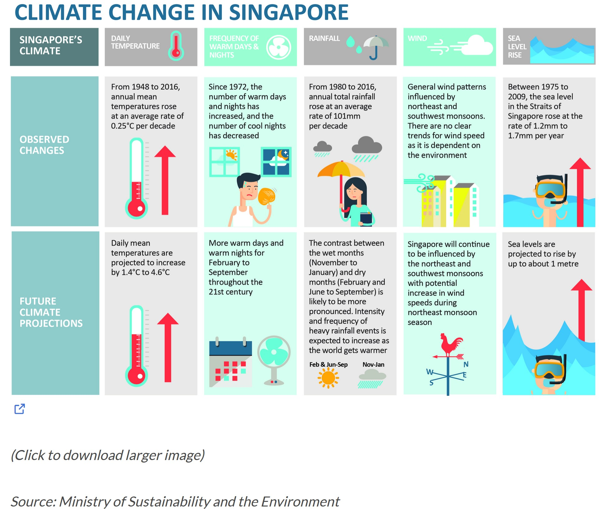
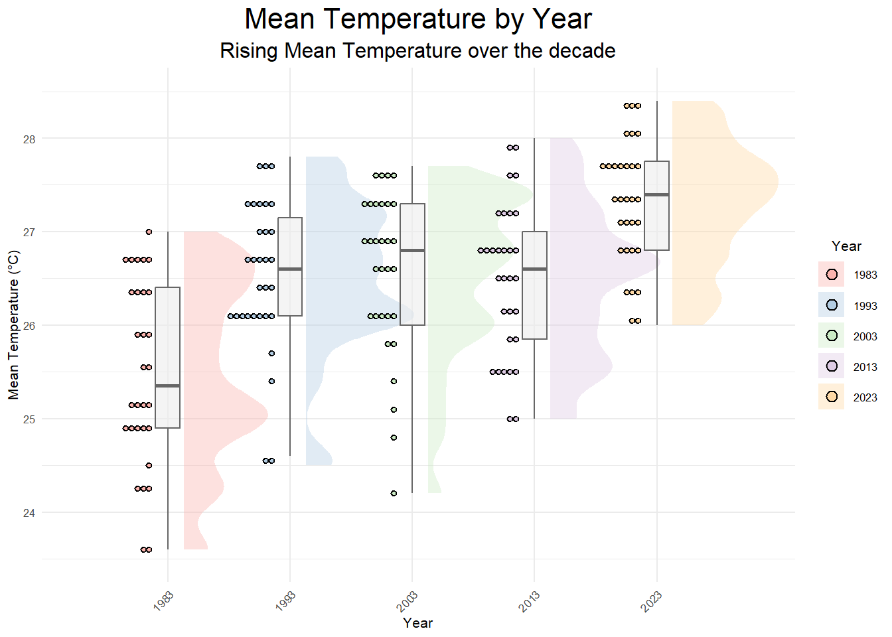

Code
pacman::p_load(ggplot2, ggbeeswarm, gghalves, ungeviz, plotly, crosstalk,
DT, ggdist, ggridges, GGally, parallelPlot,
colorspace, gganimate, tidyverse, ggthemes, ggiraph)[Take Home Exercise 3]
Past climate trends over Singapore have shown an increase in surface air temperatures and the frequency of heavy rainfall over the past few decades. However, the climate system is complex and the past trends and the magnitude of the change will not necessarily continue into the future. Climate projections using tools like climate modelling is thus necessary to project the future climate for planning and adapting to climate change.

According to an office report as shown in the info-graphic above, Daily mean temperature are projected to increase by 1.4 to 4.6, and the contrast between the wet months (November to January) and dry month (February and June to September) is likely to be more pronounced.
We will apply visual interactivity and visualizing uncertainty methods to validate the claims presented above.
In this Take Home Exercise 3, we will be creating an analystics-driven data visualisation on;
historical daily temperature and (b) rainfall data from the Meteorological Service Singapore website,
records of a month of the year 1983, 1993, 2003, 2013 and 2023 and create an analytics-driven data visualisation and,
apply appropriate interactive techniques to enhance the user experience in data discovery and/or visual story-telling.
In this exercise, the author has decided to select the December month data set from Changi Meteorological records from the years 1983, 1993, 2003, 2013 and 2023. The data is complete for the rainfall records; however, for the temperature records, the data started from 2003 onwards. To that end, the mean temperature will be utilised for data visualisation and analysis. Other Statistical Summary will be used too.
For the purpose of this exercise, the following R packages will be used, they are:
tidyverse, a family of R packages for data science process,plotly for creating interactive plot,gganimate for creating an animation plot,pacman::p_load(ggplot2, ggbeeswarm, gghalves, ungeviz, plotly, crosstalk,
DT, ggdist, ggridges, GGally, parallelPlot,
colorspace, gganimate, tidyverse, ggthemes, ggiraph)The historical records for the year will be imported and merged.
library(readr)
library(dplyr)
#| warning = FALSE
#| echo = FALSE
data_1983 <- read_csv("data/DAILYDATA_S24_198312.csv", locale = locale(encoding = "Latin1"))Rows: 31 Columns: 13
── Column specification ────────────────────────────────────────────────────────
Delimiter: ","
chr (1): Station
dbl (12): Year, Month, Day, Daily Rainfall Total (mm), Highest 30 Min Rainfa...
ℹ Use `spec()` to retrieve the full column specification for this data.
ℹ Specify the column types or set `show_col_types = FALSE` to quiet this message.data_1993 <- read_csv("data/DAILYDATA_S24_199312.csv", locale = locale(encoding = "Latin1"))Rows: 31 Columns: 13
── Column specification ────────────────────────────────────────────────────────
Delimiter: ","
chr (1): Station
dbl (12): Year, Month, Day, Daily Rainfall Total (mm), Highest 30 Min Rainfa...
ℹ Use `spec()` to retrieve the full column specification for this data.
ℹ Specify the column types or set `show_col_types = FALSE` to quiet this message.data_2003 <- read_csv("data/DAILYDATA_S24_200312.csv", locale = locale(encoding = "Latin1"))Rows: 31 Columns: 13
── Column specification ────────────────────────────────────────────────────────
Delimiter: ","
chr (1): Station
dbl (12): Year, Month, Day, Daily Rainfall Total (mm), Highest 30 Min Rainfa...
ℹ Use `spec()` to retrieve the full column specification for this data.
ℹ Specify the column types or set `show_col_types = FALSE` to quiet this message.data_2013 <- read_csv("data/DAILYDATA_S24_201312.csv", locale = locale(encoding = "Latin1"))Rows: 31 Columns: 13
── Column specification ────────────────────────────────────────────────────────
Delimiter: ","
chr (1): Station
dbl (12): Year, Month, Day, Daily Rainfall Total (mm), Highest 30 Min Rainfa...
ℹ Use `spec()` to retrieve the full column specification for this data.
ℹ Specify the column types or set `show_col_types = FALSE` to quiet this message.data_2023 <- read_csv("data/DAILYDATA_S24_202312.csv")Rows: 31 Columns: 13
── Column specification ────────────────────────────────────────────────────────
Delimiter: ","
chr (1): Station
dbl (12): Year, Month, Day, Daily Rainfall Total (mm), Highest 30 Min Rainfa...
ℹ Use `spec()` to retrieve the full column specification for this data.
ℹ Specify the column types or set `show_col_types = FALSE` to quiet this message.Merging code chunks for rainfall, as shown below:
rainfall_columns <- c("Station","Day","Year","Daily Rainfall Total (mm)")
rainfall_table <- bind_rows(
select(data_1983, all_of(rainfall_columns))%>% mutate(Year = as.character(Year)),
select(data_1993, all_of(rainfall_columns))%>% mutate(Year = as.character(Year)),
select(data_2003, all_of(rainfall_columns))%>% mutate(Year = as.character(Year)),
select(data_2013, all_of(rainfall_columns))%>% mutate(Year = as.character(Year)),
select(data_2023, all_of(rainfall_columns))%>% mutate(Year = as.character(Year)),
)
print(rainfall_table)# A tibble: 155 × 4
Station Day Year `Daily Rainfall Total (mm)`
<chr> <dbl> <chr> <dbl>
1 Changi 1 1983 2.8
2 Changi 2 1983 1.7
3 Changi 3 1983 5
4 Changi 4 1983 8.2
5 Changi 5 1983 0
6 Changi 6 1983 0
7 Changi 7 1983 0
8 Changi 8 1983 19.8
9 Changi 9 1983 48.1
10 Changi 10 1983 21.1
# ℹ 145 more rowsgeom_point() function under the ggplot package was used to plot the total rainfall (mm) on a given day by year. In this static EDA, we can observe that:
1) majority of the days by year, total rainfall (mm) was observed to be below 50mm while,
2) in the years 1983 and 2013, where the total rainfall on day 25 and day 3 were above 100mm. We can infer that these were anomalies with significantly heavy rainfall as compared to the volumes of other rainy days by year.
The Static EDA has its shortcomings in terms of enhancing data appreciation. Next, we will move onto interactivity to enhance our data visualisation.
library(ggplot2)
ggplot(data = rainfall_table, aes(x = Day, y = `Daily Rainfall Total (mm)`, color = factor(Year))) +
geom_point() + # Add points for the daily rainfall totals
theme_minimal() + # Use a minimal theme
labs(title = "Daily Rainfall Total (mm) by Day and Year",
x = "Day",
y = "Daily Rainfall Total (mm)",
color = "Year") + # Label the axes and the legend
scale_color_brewer(palette = "Set1") # Use a color palette that's easily distinguishable
plotlyLeveraging on plotly the interactive scatter allows the reader to (1) hover for details (Day and Rainfall volume of the day) , (2) select (via cursor, legend or lasso) and (3) compare data on hover. For Sn (3), the function allows the reader to have a quick glance to make a quick analysis on the Daily Rainfall trends across the years. For instance, we can observe that:
plotly further to capture Statistical ComponentsThe code chunk below, calculates the statistical summary of the scatter points which includes; (1) Total Rainfall by day, (2) Mean Rainfall by day and (3) Median Rainfall by day across all years.
library(dplyr)
# Calculate summary statistics for each year
summary_stats_by_day <- rainfall_table %>%
group_by(Day) %>%
summarise(
Total_Rainfall = sum(`Daily Rainfall Total (mm)`, na.rm = TRUE),
Mean_Rainfall = mean(`Daily Rainfall Total (mm)`, na.rm = TRUE),
Median_Rainfall = median(`Daily Rainfall Total (mm)`, na.rm = TRUE),
) %>%
ungroup()rainfall_table_with_stats <- rainfall_table %>%
left_join(summary_stats_by_day, by = "Day")
library(plotly)
plot_ly(data = rainfall_table_with_stats,
x = ~Day,
y = ~`Daily Rainfall Total (mm)`,
color = ~factor(Year),
type = 'scatter',
mode = 'markers',
hoverinfo = 'text',
text = ~paste('Day:', Day,
', Year:', Year,
'<br>Total Yearly Rainfall (mm):', Total_Rainfall,
'<br>Mean Yearly Rainfall (mm):', Mean_Rainfall,
'<br>Median Yearly Rainfall (mm):', Median_Rainfall)) %>%
layout(title = 'Daily Rainfall Total (mm) with Sum_Stats by Day ',
xaxis = list(title = 'Day'),
yaxis = list(title = 'Rainfall (mm)'))Here with the stat summary, we can observe that individual points is supported by its stats summary of total, mean and median rainfall (mm) by day across the years.
temp_columns <- c("Station","Day","Year","Mean Temperature (°C)", "Maximum Temperature (°C)", "Minimum Temperature (°C)")
temp_table <- bind_rows(
select(data_1983, all_of(temp_columns))%>% mutate(Year = as.character(Year)),
select(data_1993, all_of(temp_columns))%>% mutate(Year = as.character(Year)),
select(data_2003, all_of(temp_columns))%>% mutate(Year = as.character(Year)),
select(data_2013, all_of(temp_columns))%>% mutate(Year = as.character(Year)),
select(data_2023, all_of(temp_columns))%>% mutate(Year = as.character(Year)),
)Utilising three key features of stat_halfeye(), geom_boxplot and geom_dotplot to study onto to the given data. The code chunk below shows the static plots:
ggplot(temp_table, aes(x = Year, y = `Mean Temperature (°C)`, fill = Year)) +
stat_halfeye(
adjust = 0.4,
position = position_nudge(x = 0.13),
color = NA,
alpha = 0.4
) +
geom_boxplot(
width = 0.2,
outlier.shape = NA,
position = position_dodge(width = 0.5),
alpha = 0.6,
color = "gray40",
fill = "grey93"
) +
geom_dotplot(
binaxis = "y",
stackdir = "down",
position = position_nudge(x = -0.13),
binwidth = 0.25,
dotsize = 0.25
) +
scale_y_continuous(limits = c(23.5, 28.5)) +
scale_fill_brewer(palette = "Pastel1") +
theme_minimal(base_size = 8) +
theme(
legend.position = "right",
axis.text.x = element_text(angle = 45, hjust = 1),
legend.title = element_blank(),
plot.title = element_text(hjust = 0.5, size = 16),
plot.subtitle = element_text(hjust = 0.5, size = 12)
) +
labs(
y = "Mean Temperature (°C)",
x = "Year",
title = "Mean Temperature by Year",
subtitle = "Rising Mean Temperature over the decade"
) +
guides(fill = guide_legend(title.position = "top", title.hjust = 0.5))
Based on the static EDA, we can see that the overall mean temperature for the selected year have increased across four decades. Through the `stat_halfeye’ it can be seen that (1) the range of fluctuating mean temps over the years has condensed significantly, (2) peaks (Frequencies of Higher Mean Temp) are compressed to be lesser but sharper in scale (i.e: 2023 has 1 main peak as compared to 1983 - 2003, with a higher peak) and (3) the number of dotplots (with binwidth=2.5) denotes the co-occurrence of a binned temperature of similar range over the given days.
Through the interactivity, the tooltip, provides precise interactivity to give the viewer more information on the points/dots denoted above. The codes below calculates other statistical components to be added back onto the temp_table.
#| warning = FALSE
library(ggplot2)
library(ggiraph)
library(RColorBrewer)
library(dplyr)
summary_stats <- temp_table %>%
group_by(Year) %>%
summarise(
OverallMean = mean(`Mean Temperature (°C)`, na.rm = TRUE),
OverallMin = min(`Mean Temperature (°C)`, na.rm = TRUE),
OverallMax = max(`Mean Temperature (°C)`, na.rm = TRUE),
Range = OverallMax - OverallMin # Calculate the range
) %>%
ungroup()
temp_table_2 <- temp_table %>%
left_join(summary_stats, by = "Year")
head(temp_table_2)# A tibble: 6 × 10
Station Day Year `Mean Temperature (°C)` `Maximum Temperature (°C)`
<chr> <dbl> <chr> <dbl> <dbl>
1 Changi 1 1983 26.4 31
2 Changi 2 1983 24.3 27.2
3 Changi 3 1983 25.1 30.2
4 Changi 4 1983 25.2 30.3
5 Changi 5 1983 26 29.8
6 Changi 6 1983 25 27.7
# ℹ 5 more variables: `Minimum Temperature (°C)` <dbl>, OverallMean <dbl>,
# OverallMin <dbl>, OverallMax <dbl>, Range <dbl>p <- ggplot(temp_table_2, aes(x = Year, y = `Mean Temperature (°C)`, fill = Year)) +
stat_halfeye(
adjust = 0.4,
position = position_nudge(x = 0.2),
color = NA,
alpha = 0.4
) +
geom_boxplot(
aes(
tooltip = paste('Mean:',"OverallMean", '| Range:', "Range", '<br>Max:', "OverallMax", '| Min:', "OverallMin"),
data_id = Year),
width = 0.2,
outlier.shape = NA,
position = position_dodge(width = 0.5),
alpha = 0.6,
color = "gray40",
fill = "white"
) +
geom_point_interactive(
aes(
tooltip = paste('Day', `Day`, '<br>Mean Temp (°C):', `Mean Temperature (°C)`),
data_id = Year
),
position = position_nudge(x = -0.2),
bindwidth = 2.5,
size = 1.3, # Adjust the size as per your preference
alpha = 0.35
) +
scale_y_continuous(limits = c(23.5, 28.5)) +
scale_fill_brewer(palette = "Pastel1") +
theme_minimal(base_size = 8) +
theme(
legend.position = "right",
axis.text.x = element_text(angle = 45, hjust = 1),
legend.title = element_blank(),
plot.title = element_text(hjust = 0.5, size = 16),
plot.subtitle = element_text(hjust = 0.5, size = 12)
) +
labs(
y = "Mean Temperature (°C)",
x = "Year",
title = "Mean Temperature by Year",
subtitle = "Rising Mean Temperature over the decade"
) +
guides(fill = guide_legend(title.position = "top", title.hjust = 0.5))
g <- girafe(
ggobj = p,
width_svg = 6,
height_svg = 6*0.618,
options = list(
opts_hover(css = "fill: #963000;"),
opts_hover_inv(css = "opacity:0.2;")
)
)
print(g)geom_boxplot, it can be observed that the Overall Mean and Max temperature has increased over the years with the year 2023 having the highest temperature.In Summary, the interactivity functions utilised in the Take Home Exercise allowed us to explore and gain more insights on the probability (for rainfalls) and increasing trends (for temperature). The utility of the tooltip, data_ID and functions such as comparing two or more data when hovering, enhancing data appreciation and in turns garner greater insights and inferences.